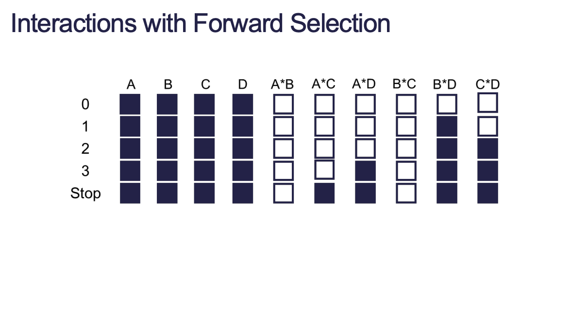
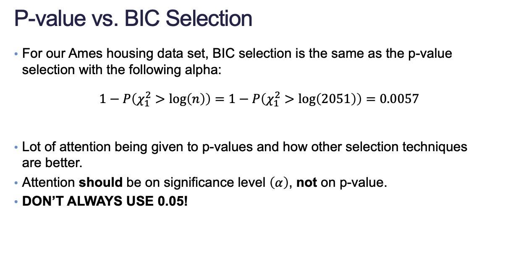

Code
library(AmesHousing)
library(tidyverse)
library(reticulate)
set.seed(123)
use_condaenv("msa")
ames <- make_ordinal_ames()
ames <- ames |>
mutate(Bonus = ifelse(Sale_Price > 175000, 1, 0))
train <- sample_frac(ames, 0.7)Yang Chen
September 5, 2023
September 6, 2023
Just like with linear regression, we can use normal stepwise selection techniques (forward, backward, stepwise) to get different models.
full_model <- glm(Bonus ~ Gr_Liv_Area + factor(House_Style) + Garage_Area + Fireplaces + factor(Full_Bath) + factor(Half_Bath) + Lot_Area + factor(Central_Air) + Second_Flr_SF + TotRms_AbvGrd + First_Flr_SF, data = train, family = binomial())
empty_model <- glm(Bonus ~ 1, data = train, family = binomial())
step_model <- step(empty_model, scope = list(lower = formula(empty_model), upper = formula(full_model)), direction = "both")Start: AIC=2777.81
Bonus ~ 1
Df Deviance AIC
+ factor(Full_Bath) 4 1911.5 1921.5
+ Gr_Liv_Area 1 1926.4 1930.4
+ Garage_Area 1 2135.4 2139.4
+ First_Flr_SF 1 2294.1 2298.1
+ Fireplaces 1 2423.7 2427.7
+ TotRms_AbvGrd 1 2449.7 2453.7
+ factor(House_Style) 7 2542.1 2558.1
+ factor(Half_Bath) 2 2608.1 2614.1
+ Lot_Area 1 2621.9 2625.9
+ Second_Flr_SF 1 2631.8 2635.8
+ factor(Central_Air) 1 2654.3 2658.3
<none> 2775.8 2777.8
Step: AIC=1921.48
Bonus ~ factor(Full_Bath)
Df Deviance AIC
+ Garage_Area 1 1616.3 1628.3
+ Fireplaces 1 1659.5 1671.5
+ Gr_Liv_Area 1 1665.7 1677.7
+ First_Flr_SF 1 1711.7 1723.7
+ Lot_Area 1 1811.5 1823.5
+ factor(Half_Bath) 2 1812.2 1826.2
+ factor(Central_Air) 1 1827.6 1839.6
+ factor(House_Style) 7 1822.3 1846.3
+ TotRms_AbvGrd 1 1885.6 1897.6
+ Second_Flr_SF 1 1908.2 1920.2
<none> 1911.5 1921.5
- factor(Full_Bath) 4 2775.8 2777.8
Step: AIC=1628.26
Bonus ~ factor(Full_Bath) + Garage_Area
Df Deviance AIC
+ Fireplaces 1 1440.9 1454.9
+ Gr_Liv_Area 1 1481.3 1495.3
+ First_Flr_SF 1 1540.6 1554.6
+ factor(Half_Bath) 2 1546.5 1562.5
+ factor(House_Style) 7 1571.5 1597.5
+ factor(Central_Air) 1 1585.6 1599.6
+ Lot_Area 1 1589.0 1603.0
+ TotRms_AbvGrd 1 1606.6 1620.6
+ Second_Flr_SF 1 1608.7 1622.7
<none> 1616.3 1628.3
- Garage_Area 1 1911.5 1921.5
- factor(Full_Bath) 4 2135.4 2139.4
Step: AIC=1454.86
Bonus ~ factor(Full_Bath) + Garage_Area + Fireplaces
Df Deviance AIC
+ Gr_Liv_Area 1 1381.5 1397.5
+ factor(Half_Bath) 2 1389.8 1407.8
+ factor(House_Style) 7 1386.2 1414.2
+ First_Flr_SF 1 1413.8 1429.8
+ factor(Central_Air) 1 1426.2 1442.2
+ Lot_Area 1 1435.1 1451.1
+ Second_Flr_SF 1 1436.5 1452.5
<none> 1440.9 1454.9
+ TotRms_AbvGrd 1 1440.3 1456.3
- Fireplaces 1 1616.3 1628.3
- Garage_Area 1 1659.5 1671.5
- factor(Full_Bath) 4 1943.5 1949.5
Step: AIC=1397.55
Bonus ~ factor(Full_Bath) + Garage_Area + Fireplaces + Gr_Liv_Area
Df Deviance AIC
+ factor(House_Style) 7 1310.0 1340.0
+ TotRms_AbvGrd 1 1335.1 1353.1
+ factor(Central_Air) 1 1354.3 1372.3
+ factor(Half_Bath) 2 1356.4 1376.4
+ First_Flr_SF 1 1368.2 1386.2
+ Second_Flr_SF 1 1370.7 1388.7
<none> 1381.5 1397.5
+ Lot_Area 1 1381.2 1399.2
- Gr_Liv_Area 1 1440.9 1454.9
- Fireplaces 1 1481.3 1495.3
- Garage_Area 1 1546.1 1560.1
- factor(Full_Bath) 4 1626.6 1634.6
Step: AIC=1339.99
Bonus ~ factor(Full_Bath) + Garage_Area + Fireplaces + Gr_Liv_Area +
factor(House_Style)
Df Deviance AIC
+ factor(Half_Bath) 2 1261.2 1295.2
+ TotRms_AbvGrd 1 1268.8 1300.8
+ factor(Central_Air) 1 1288.2 1320.2
<none> 1310.0 1340.0
+ Lot_Area 1 1309.7 1341.7
+ Second_Flr_SF 1 1309.9 1341.9
+ First_Flr_SF 1 1309.9 1341.9
- factor(House_Style) 7 1381.5 1397.5
- Gr_Liv_Area 1 1386.2 1414.2
- Fireplaces 1 1394.8 1422.8
- Garage_Area 1 1403.9 1431.9
- factor(Full_Bath) 4 1511.2 1533.2
Step: AIC=1295.15
Bonus ~ factor(Full_Bath) + Garage_Area + Fireplaces + Gr_Liv_Area +
factor(House_Style) + factor(Half_Bath)
Df Deviance AIC
+ TotRms_AbvGrd 1 1228.3 1264.3
+ factor(Central_Air) 1 1248.4 1284.4
+ First_Flr_SF 1 1259.0 1295.0
<none> 1261.2 1295.2
+ Second_Flr_SF 1 1260.3 1296.3
+ Lot_Area 1 1260.7 1296.7
- factor(Half_Bath) 2 1310.0 1340.0
- Gr_Liv_Area 1 1331.8 1363.8
- Fireplaces 1 1335.7 1367.7
- Garage_Area 1 1336.7 1368.7
- factor(House_Style) 7 1356.4 1376.4
- factor(Full_Bath) 4 1490.6 1516.6
Step: AIC=1264.3
Bonus ~ factor(Full_Bath) + Garage_Area + Fireplaces + Gr_Liv_Area +
factor(House_Style) + factor(Half_Bath) + TotRms_AbvGrd
Df Deviance AIC
+ factor(Central_Air) 1 1218.9 1256.9
<none> 1228.3 1264.3
+ First_Flr_SF 1 1226.7 1264.7
+ Lot_Area 1 1227.3 1265.3
+ Second_Flr_SF 1 1227.7 1265.7
- TotRms_AbvGrd 1 1261.2 1295.2
- factor(Half_Bath) 2 1268.8 1300.8
- Fireplaces 1 1291.2 1325.2
- Garage_Area 1 1294.7 1328.7
- factor(House_Style) 7 1315.8 1337.8
- Gr_Liv_Area 1 1330.3 1364.3
- factor(Full_Bath) 4 1453.8 1481.8
Step: AIC=1256.88
Bonus ~ factor(Full_Bath) + Garage_Area + Fireplaces + Gr_Liv_Area +
factor(House_Style) + factor(Half_Bath) + TotRms_AbvGrd +
factor(Central_Air)
Df Deviance AIC
<none> 1218.9 1256.9
+ First_Flr_SF 1 1217.7 1257.7
+ Lot_Area 1 1218.0 1258.0
+ Second_Flr_SF 1 1218.5 1258.5
- factor(Central_Air) 1 1228.3 1264.3
- TotRms_AbvGrd 1 1248.4 1284.4
- factor(Half_Bath) 2 1253.1 1287.1
- Fireplaces 1 1272.7 1308.7
- Garage_Area 1 1272.9 1308.9
- factor(House_Style) 7 1300.0 1324.0
- Gr_Liv_Area 1 1324.1 1360.1
- factor(Full_Bath) 4 1428.7 1458.7We don’t use forward selection as much as it cannot remove variables from your model. Instead, we might favor backward selection or stepwise selection. When we decide on our main effects after data exploration, we can create interactions within our subset and use forward selection to see which interactions stay in our model.

P-values are falling out of popularity, but it is primarily because people are not taking into account the \(\alpha\) level.
Mathematically, AIC and BIC for adding or removing variables with stepwise selection is the same thing as using p-values in LRT.
AIC is not necessarily better than p-values when determining variable significance:
\[ AIC = -2\log(L) + 2p \]
If a model is better with a lower AIC:
\[ \begin{align*} -2\log(L_{p+1}) + 2(p + 1) &< -2\log(L_p) + 2p \\ 2 &< 2(\log(L_{p+1}) - \log(L_p)) \end{align*} \]
Right hand side is an LRT that follows a \(\chi^2\) distribution with 1 degree of freedom. The significance level from this LRT can be calculated as:
\[ 1 - P(\chi_1^2 > 2) = 0.1573 \]
Notice how this AIC calculation does not account for sample size at all.
This is a relatively high significance level and for large datasets does not seem like a good technique for selecting variables.
Recall the BIC calculation:
\[ BIC = -2\log(L) + p\log(n) \]
If we work through the math again then we find that BIC adjusts for sample size:
\[ 1 - P(\chi_1^2 > \log(n)) =\cdots \]

Linear regression residuals have properties useful for model diagnostics. In a binary response model setting, we have residuals but they are not as intuitive.
A saturated model is a model that fits the data perfectly by essentially overfitting it. We create a variable for each unique combination of inputs. Deviance is a measure of how far the fitted model is from the saturated model–the error. Logistic regression minimizes the sum of squared deviances.
Deviance residuals tell us how much each observation reduces the deviance.
To plot Cook’s D:
To plot DFBETAS:
from statsmodels.genmod.families import Binomial
from statsmodels.genmod.generalized_linear_model import GLM
log_model = GLM.from_formula(
"Bonus ~ Gr_Liv_Area + Garage_Area + Fireplaces + C(Full_Bath) + Lot_Area + C(Central_Air) + TotRms_AbvGrd + Gr_Liv_Area:Fireplaces",
data=train,
family=Binomial(),
).fit()
log_model.summary()| Dep. Variable: | Bonus | No. Observations: | 2051 |
| Model: | GLM | Df Residuals: | 2039 |
| Model Family: | Binomial | Df Model: | 11 |
| Link Function: | Logit | Scale: | 1.0000 |
| Method: | IRLS | Log-Likelihood: | -655.10 |
| Date: | Thu, 07 Sep 2023 | Deviance: | 1310.2 |
| Time: | 10:54:18 | Pearson chi2: | 5.34e+05 |
| No. Iterations: | 7 | Pseudo R-squ. (CS): | 0.5106 |
| Covariance Type: | nonrobust |
| coef | std err | z | P>|z| | [0.025 | 0.975] | |
| Intercept | -9.7344 | 1.441 | -6.753 | 0.000 | -12.560 | -6.909 |
| C(Full_Bath)[T.1] | -0.0390 | 1.143 | -0.034 | 0.973 | -2.279 | 2.201 |
| C(Full_Bath)[T.2] | 2.3699 | 1.143 | 2.073 | 0.038 | 0.129 | 4.610 |
| C(Full_Bath)[T.3] | 4.5001 | 1.519 | 2.963 | 0.003 | 1.523 | 7.477 |
| C(Full_Bath)[T.4] | -1.2645 | 2.126 | -0.595 | 0.552 | -5.431 | 2.902 |
| C(Central_Air)[T.Y] | 2.2895 | 0.567 | 4.037 | 0.000 | 1.178 | 3.401 |
| Gr_Liv_Area | 0.0038 | 0.000 | 8.659 | 0.000 | 0.003 | 0.005 |
| Garage_Area | 0.0046 | 0.000 | 9.520 | 0.000 | 0.004 | 0.006 |
| Fireplaces | 1.9427 | 0.542 | 3.582 | 0.000 | 0.880 | 3.006 |
| Lot_Area | 1.568e-05 | 1.57e-05 | 1.000 | 0.317 | -1.51e-05 | 4.64e-05 |
| TotRms_AbvGrd | -0.5049 | 0.080 | -6.342 | 0.000 | -0.661 | -0.349 |
| Gr_Liv_Area:Fireplaces | -0.0006 | 0.000 | -1.859 | 0.063 | -0.001 | 3.45e-05 |
dfb_Intercept dfb_C(Full_Bath)[T.1] ... hat_diag dffits_internal
0 -0.004889 0.001706 ... 0.003598 0.023667
1 -0.013708 0.004351 ... 0.011756 -0.167066
2 0.023485 0.001300 ... 0.006500 -0.135552
3 -0.002182 0.000401 ... 0.002478 0.008381
4 -0.000883 -0.000017 ... 0.000711 -0.002877
[5 rows x 16 columns]